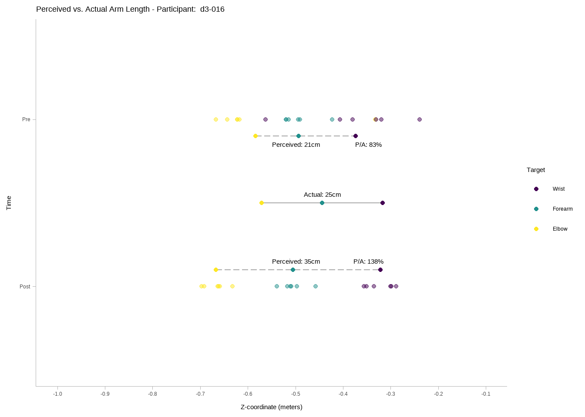
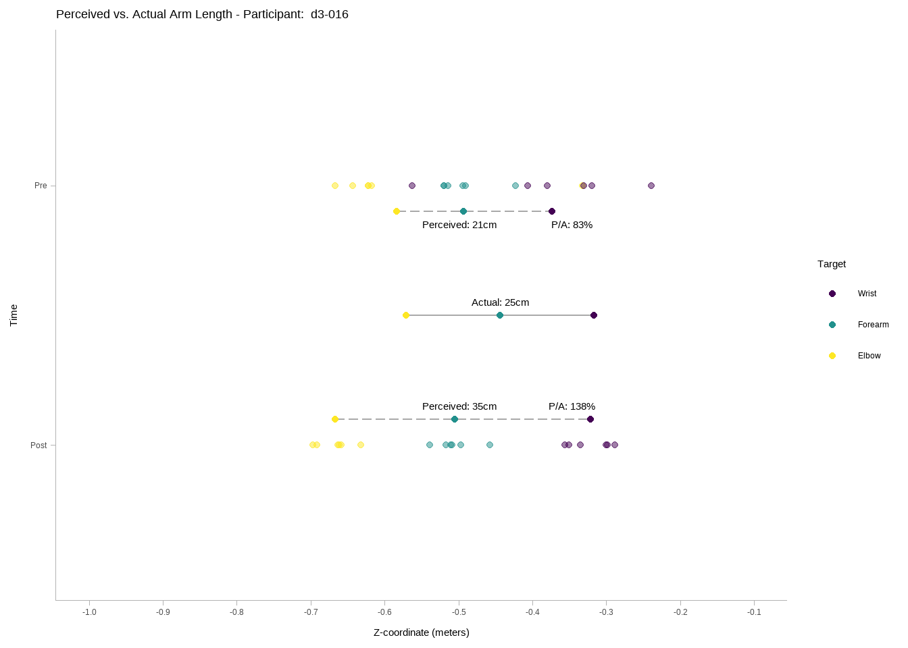
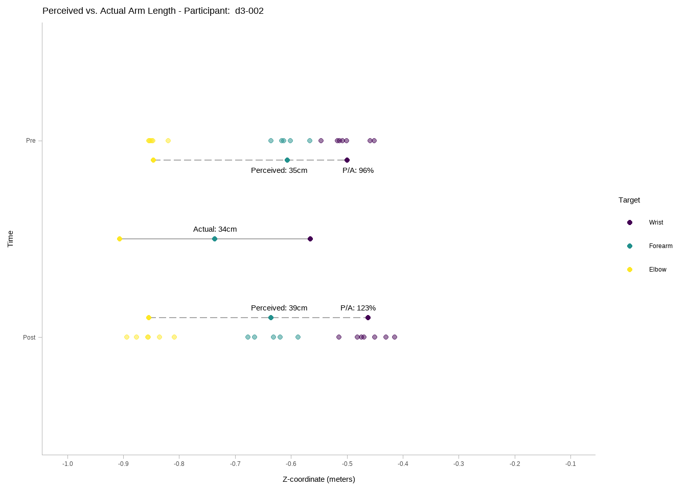

# A tibble: 2 × 2
time m_length
<chr> <dbl>
1 post 109
2 pre 108[1] 59



# A tibble: 2 × 2
time m_length
<chr> <dbl>
1 post 107
2 pre 110landmark %>%
ggplot(
aes(
x = error,
y = target,
color = direction,
fill = direction
)
) +
stat_dotsinterval(
alpha = .6,
position = position_dodge(width = .1),
interval_alpha = 1,
point_size = 4.5) +
scale_color_viridis_d() +
scale_fill_viridis_d() +
theme_tidybayes()landmark %>%
ggplot(
aes(
x = lapse_fix_error,
y = target,
color = direction,
fill = direction
)
) +
stat_dotsinterval(
alpha = .6,
position = position_dodge(width = .1),
interval_alpha = 1,
point_size = 4.5) +
scale_color_viridis_d() +
scale_fill_viridis_d() +
theme_tidybayes()as.data.table(armlength_df)[order(ratio, decreasing = TRUE)] ppid time armlength perceived veridical ratio
1: d3-023 Post 23 0.3984167 0.2317222 172
2: d3-019 Pre 23 0.3642167 0.2262500 161
3: d3-023 Pre 23 0.3703000 0.2345111 158
4: d3-007 Pre 26 0.3792167 0.2528222 150
5: d3-019 Post 23 0.3328833 0.2247889 148
6: d3-008 Pre 26 0.3784667 0.2625944 144
7: d3-015 Pre 23 0.3049500 0.2196389 139
8: d3-016 Post 25 0.3457833 0.2511611 138
9: d3-014 Pre 22 0.3054333 0.2237056 137
10: d3-011 Post 25 0.3326667 0.2531944 131
11: d3-015 Post 23 0.3115833 0.2426778 128
12: d3-012 Post 26 0.3245333 0.2563167 127
13: d3-002 Post 34 0.4007500 0.3196722 125
14: d3-014 Post 22 0.2717500 0.2183389 124
15: d3-013 Post 24 0.2866000 0.2329000 123
16: d3-013 Pre 24 0.2889667 0.2381222 121
17: d3-021 Post 23 0.2722000 0.2260000 120
18: d3-011 Pre 25 0.2900667 0.2482500 117
19: d3-024 Pre 25 0.2812167 0.2498778 113
20: d3-020 Pre 26 0.2875500 0.2575611 112
21: d3-022 Pre 29 0.3149333 0.2823278 112
22: d3-018 Pre 22 0.2376500 0.2247667 106
23: d3-017 Pre 25 0.2528333 0.2459167 103
24: d3-022 Post 29 0.2967500 0.2876889 103
25: d3-007 Post 26 0.2689000 0.2639722 102
26: d3-009 Post 26 0.2613833 0.2573500 102
27: d3-010 Post 27 0.2749167 0.2686500 102
28: d3-017 Post 25 0.2472500 0.2443056 101
29: d3-018 Post 22 0.2209333 0.2188167 101
30: d3-020 Post 26 0.2643167 0.2627556 101
31: d3-010 Pre 27 0.2708667 0.2715389 100
32: d3-008 Post 26 0.2541667 0.2567056 99
33: d3-021 Pre 23 0.2226000 0.2248500 99
34: d3-002 Pre 34 0.3544167 0.3624889 98
35: d3-024 Post 25 0.2426500 0.2527889 96
36: d3-009 Pre 26 0.2430000 0.2556000 95
37: d3-001 Post 34 0.3153833 0.3445889 92
38: d3-012 Pre 26 0.2310667 0.2552111 91
39: d3-005 Post 27 0.2452167 0.2777222 88
40: d3-001 Pre 34 0.2944167 0.3449167 85
41: d3-016 Pre 25 0.2109833 0.2555444 83
42: d3-004 Pre 30 0.2449500 0.3113833 79
43: d3-003 Pre 34 0.2488167 0.3429000 73
44: d3-005 Pre 27 0.1975500 0.2707111 73
45: d3-004 Post 30 0.1969667 0.2956722 67
46: d3-003 Post 34 0.2152500 0.3389389 64
ppid time armlength perceived veridical ratioas.data.table(change_df)[order(veridical_change, decreasing = TRUE)] ppid veridical_change perceived_change
1: d3-002 0.043 -0.046
2: d3-004 0.016 0.048
3: d3-008 0.006 0.124
4: d3-018 0.006 0.017
5: d3-013 0.005 0.002
6: d3-014 0.005 0.034
7: d3-003 0.004 0.034
8: d3-016 0.004 -0.135
9: d3-010 0.003 -0.004
10: d3-023 0.003 -0.028
11: d3-017 0.002 0.006
12: d3-019 0.001 0.031
13: d3-001 0.000 -0.021
14: d3-012 -0.001 -0.093
15: d3-021 -0.001 -0.050
16: d3-009 -0.002 -0.018
17: d3-024 -0.003 0.039
18: d3-011 -0.005 -0.043
19: d3-020 -0.005 0.023
20: d3-022 -0.005 0.018
21: d3-005 -0.007 -0.048
22: d3-007 -0.011 0.110
23: d3-015 -0.023 -0.007
ppid veridical_change perceived_changeas.data.table(change_df)[, .(abs_change = perceived_change + veridical_change)][
order(abs_change, decreasing = TRUE)
] abs_change
1: 0.130
2: 0.099
3: 0.064
4: 0.039
5: 0.038
6: 0.036
7: 0.032
8: 0.023
9: 0.018
10: 0.013
11: 0.008
12: 0.007
13: -0.001
14: -0.003
15: -0.020
16: -0.021
17: -0.025
18: -0.030
19: -0.048
20: -0.051
21: -0.055
22: -0.094
23: -0.131
abs_changelandmark[,
.(
variability = sd(error),
variability_as_ratio = sd(error) / mean(forearmlength)
),
by = c("ppid")
][order(variability, decreasing = T)] ppid variability variability_as_ratio
1: d3-008 0.09533931 0.3662162
2: d3-012 0.08667142 0.3381419
3: d3-016 0.07362238 0.2898297
4: d3-023 0.07110809 0.3035708
5: d3-019 0.06426877 0.2846410
6: d3-003 0.05738158 0.1670308
7: d3-005 0.05406104 0.1958142
8: d3-011 0.05285341 0.2107299
9: d3-007 0.05283735 0.2023451
10: d3-017 0.05249908 0.2140951
11: d3-002 0.04828889 0.1408969
12: d3-004 0.04673161 0.1530762
13: d3-010 0.04638074 0.1711098
14: d3-015 0.04432751 0.1913601
15: d3-001 0.04239624 0.1216341
16: d3-014 0.04095467 0.1848413
17: d3-009 0.03848279 0.1499541
18: d3-024 0.03829291 0.1519543
19: d3-022 0.03485508 0.1219538
20: d3-021 0.03447727 0.1523895
21: d3-013 0.03158315 0.1314732
22: d3-018 0.03088615 0.1391372
23: d3-020 0.02994595 0.1147049
ppid variability variability_as_ratiolandmark[,
.(
variability_lf = sd(lapse_fix_error),
variability_as_ratio_lf = sd(lapse_fix_error) / mean(forearmlength),
lapsefix_improvement = sd(error) - sd(lapse_fix_error)
),
by = c("ppid")
][order(variability_lf, decreasing = T)] ppid variability_lf variability_as_ratio_lf lapsefix_improvement
1: d3-008 0.09533931 0.3662162 0.0000000000
2: d3-023 0.06956669 0.2969904 0.0015413987
3: d3-019 0.06426877 0.2846410 0.0000000000
4: d3-003 0.05738158 0.1670308 0.0000000000
5: d3-015 0.05346225 0.2307944 -0.0091347373
6: d3-007 0.05283735 0.2023451 0.0000000000
7: d3-005 0.05088063 0.1842945 0.0031804106
8: d3-012 0.04948935 0.1930789 0.0371820681
9: d3-017 0.04919090 0.2006041 0.0033081806
10: d3-020 0.04796326 0.1837184 -0.0180173151
11: d3-010 0.04769766 0.1759683 -0.0013169280
12: d3-004 0.04673161 0.1530762 0.0000000000
13: d3-016 0.04485505 0.1765812 0.0287673255
14: d3-011 0.04476353 0.1784751 0.0080898817
15: d3-024 0.04393706 0.1743515 -0.0056441533
16: d3-014 0.04315122 0.1947550 -0.0021965528
17: d3-001 0.04239624 0.1216341 0.0000000000
18: d3-002 0.04205240 0.1227001 0.0062364886
19: d3-013 0.04090130 0.1702625 -0.0093181538
20: d3-009 0.03848279 0.1499541 0.0000000000
21: d3-022 0.03541449 0.1239111 -0.0005594145
22: d3-021 0.03447727 0.1523895 0.0000000000
23: d3-018 0.02486565 0.1120159 0.0060204946
ppid variability_lf variability_as_ratio_lf lapsefix_improvement